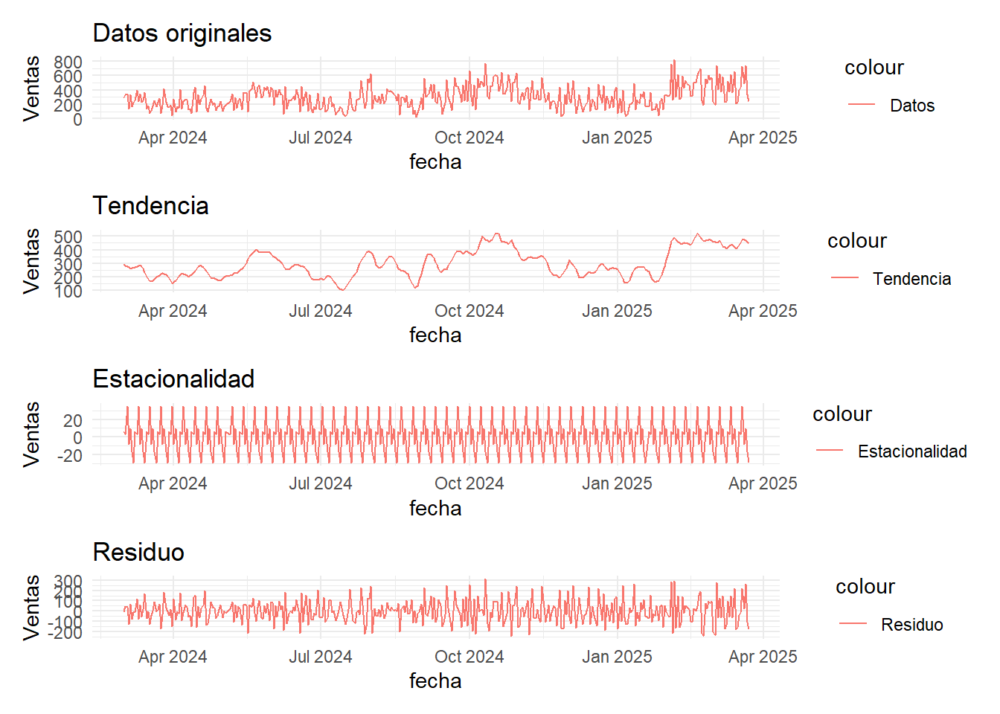
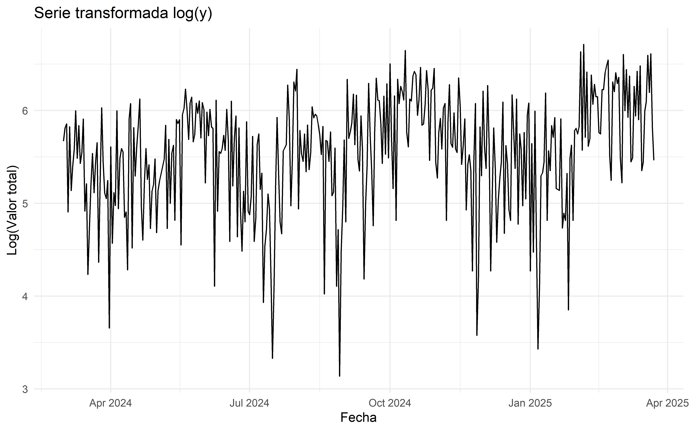

Capítulo 2 Análisis grafico de series de tiempo
Este es un análisis temporal de las ventas diarias de una máquina de café, con el objetivo de identificar patrones, tendencias y ciclos estacionales que permitan optimizar la gestión del negocio. Los datos incluyen información sobre la fecha y hora de las ventas, el medio de pago (efectivo o tarjeta), el valor de cada transacción y el tipo de café vendido. El análisis se centra en la variable valor_total (suma de ventas por día) y utiliza tres herramientas principales: el promedio móvil, la función de autocorrelación (ACF) y la descomposición STL.
2.1 Metodología
2.1.1 Datos
Los datos abarcan un periodo de 385 días, desde abril 01 de 2024 hasta abril 23 de 2025. La variable analizada, valor_total, representa la suma de las ventas diarias (en dolares).
2.1.2 Promedio móvil
Promedio móvil: Se calculó un promedio móvil de 7 días para suavizar las fluctuaciones diarias y destacar tendencias generales en las ventas. La siguiente gráfica muestra las ventas diarias (línea azul) junto con el promedio móvil (línea naranja).
Figure 2.1: Ventas diarias con promedio móvil
La gráfica muestra una alta variabilidad en las ventas diarias, con picos que alcanzan hasta 800 y caídas cercanas a 0. El promedio móvil revela las siguientes tendencias: Abril-julio 2024: Las ventas promedio crecen de ~300 a ~400, indicando un aumento en la demanda.
Julio-octubre 2024: Alcanzan un pico de ~500, mostrando un periodo de alta demanda, posiblemente por festividades o factores estacionales.
Octubre 2024-enero 2025: Disminuyen a ~300, reflejando una caída en las ventas durante el invierno.
Enero-abril 2025: Se recuperan y estabilizan en ~400, indicando una mejora en la primavera.
Esto sugiere una tendencia estacional a largo plazo, con un pico en octubre y una caída en invierno.
2.1.3 Función de Autocorrelación (ACF)
La función de autocorrelación (ACF) mide la correlación de las ventas diarias consigo mismas en diferentes rezagos, ayudando a identificar patrones temporales y ciclos estacionales.
Figure 2.2: Autocorrelación de ventas
La gráfica ACF muestra: Rezagos 1 a 6: Autocorrelaciones significativas (~0.3 a 0.4), indicando una dependencia a corto plazo. Las ventas de un día están correlacionadas con las de los días anteriores, con un efecto que disminuye gradualmente.
Rezago 7: Un pico significativo (~0.4), confirmando un ciclo semanal. Esto indica que las ventas tienen un patrón que se repite cada 7 días (por ejemplo, mayor demanda los fines de semana).
Rezagos 8 a 14: Autocorrelaciones más pequeñas pero aún significativas, con otro pico en el rezago 14 (segundo ciclo semanal), reforzando el patrón estacional.
Este ciclo semanal sugiere que las ventas varían según el día de la semana.
2.1.4 Descomposición STL
La descomposición STL separa la serie temporal en tres componentes: tendencia, estacionalidad (ciclo semanal) y residuo.

La descomposición STL revela los siguientes patrones: Tendencia: Similar al promedio móvil, muestra un aumento inicial (abril-julio 2024), un pico en octubre (500), una caída en invierno (300), y una recuperación en primavera (~400). Esto confirma una tendencia estacional a largo plazo.
Estacionalidad: Oscila entre -20 y 20, con un ciclo que se repite cada 7 días, confirmando el patrón semanal identificado por la ACF. Aunque el efecto estacional es pequeño, indica variaciones según el día de la semana (por ejemplo, mayor demanda los fines de semana).
Residuo: Varía entre -300 y 300, mostrando una alta variabilidad. Esto indica que hay fluctuaciones significativas en las ventas que no se explican por la tendencia ni la estacionalidad, posiblemente debido a eventos aleatorios (festivos, promociones, cierres).
2.2 Estacionariedad, Diferenciación y Transformaciones
Se analizó la estacionariedad de las ventas y se evaluó la necesidad de diferenciación y transformaciones para controlar tendencia y variabilidad.
2.2.1 Análisis de Estacionariedad
La estacionariedad se evaluó con la prueba ADF (Augmented Dickey-Fuller). Una serie se considera estacionaria si su media y varianza son constantes en el tiempo.
##
## Augmented Dickey-Fuller Test
##
## data: ts_ventas
## Dickey-Fuller = -3.5858, Lag order = 7, p-value = 0.0345
## alternative hypothesis: stationaryEl valor p de la prueba ADF para la serie original es 0.0345. Dado que el valor p es menor que 0.05, rechazamos la hipótesis nula de no estacionariedad, indicando que la serie es estacionaria. Esto significa que la serie no requiere diferenciación, aunque la descomposición STL y el promedio móvil muestran una tendencia estacional a largo plazo (pico en octubre, caída en invierno, recuperación en primavera). La estacionariedad implica que la media y varianza son relativamente constantes.
2.2.2 Diferenciación
Dado que la prueba ADF confirma que la serie ya es estacionaria (valor p = 0.0345 < 0.05), la diferenciación no es necesaria.
2.2.3 Transformaciones
La serie original muestra alta variabilidad, con picos grandes (~800) y caídas a 23.02. Esto sugiere una varianza no constante, que podría beneficiarse de una transformación logarítmica para estabilizar la variabilidad. Se verifica si hay valores no positivos::
## [1] 23.02El valor mínimo es 23.02, un valor positivo y no cercano a 0. Por lo tanto, se puede aplicar una transformación logarítmica log(y).
 La gráfica de la serie transformada muestra que los picos se han reducido en escala. Por ejemplo, los picos más altos, que antes alcanzaban 800, ahora están en el rango de log(800)≈6.6, y las caídas a 23.02 ahora son log(23.02)≈3.1. Esto indica que la transformación estabiliza la varianza, haciendo las fluctuaciones más uniformes a lo largo del tiempo. La transformación no elimina la tendencia estacional ni el ciclo semanal ya que la transformación logarítmica afecta principalmente la varianza, no la tendencia ni la estacionalidad. Aunque la serie es estacionaria sin transformación, esta transformación mejora la estabilidad de la serie, lo que puede facilitar el modelado posterior (por ejemplo, SARIMA) y puede mejorar la precisión de las predicciones.
2.2.4 Justificación
Diferenciación: No es necesaria, ya que la serie es estacionaria según la prueba ADF (valor p = 0.0345 < 0.05).
Transformación logarítmica: Aunque no es estrictamente necesaria para la estacionariedad, la transformación log(y) ayuda a estabilizar la varianza de la serie, que tiene alta variabilidad.
2.3 Conclusiones
El análisis temporal de las ventas diarias de la máquina de café revela los siguientes hallazgos: Tendencia estacional a largo plazo: Las ventas crecen hacia octubre (pico de 500), caen en invierno (300), y se recuperan en primavera (~400).
Ciclo semanal: Tanto la ACF como la descomposición STL confirman un ciclo de 7 días, indicando que las ventas varían según el día de la semana. Se puede analizar las ventas por día de la semana para identificar días de alta demanda (por ejemplo, fines de semana).
Alta variabilidad residual: El residuo de la descomposición STL muestra fluctuaciones significativas (hasta ±300), lo que sugiere que las ventas tienen un componente impredecible. Esto podría deberse a eventos externos (festivos, promociones), que vale la pena investigar para mejorar las predicciones.
Estacionariedad y transformaciones: La serie original es estacionaria (prueba ADF, valor p = 0.0345 < 0.05), por lo que la diferenciación no es necesaria. La transformación log estabiliza la varianza, reduciendo la magnitud de las fluctuaciones (de un rango de 23.02 a 800 a ~3.14 a ~6.68 en la escala logarítmica). Aunque la transformación no elimina la tendencia estacional ni el ciclo semanal, mejora la estabilidad de la serie, lo que facilita el modelado posterior. Un modelo como SARIMA puede ser adecuado para capturar la estacionalidad semanal y la tendencia estacional a largo plazo.
En resumen, las ventas de la máquina de café presentan patrones claros a nivel semanal y estacional. La serie es estacionaria, por lo que está lista para modelado sin diferenciación. La transformación log(y) mejora la estabilidad de la varianza, haciendo la serie más adecuada para modelos como SARIMA, que pueden capturar el ciclo estacional semanal y la tendencia estacional.